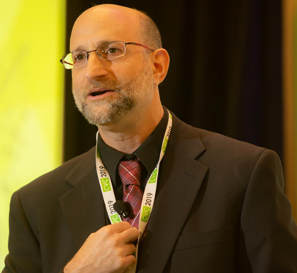

Maxwell Joseph Jacobson
My name is Max, and I'm a graduate student and researcher at Purdue University. I study machine learning and artificial intelligence in relation to many domains including biotechnology, robotics, and computer vision.
My website.
Maria Romeo
Graduate in biomedical engineering looking forward to continue deepening my professional career in one of my greatest passions: medical imaging. My main interests also include artificial intelligence and computer vision.
Yexiang Xue
My research focuses on developing intelligent systems that tightly integrate decision making with machine learning and probabilistic reasoning under uncertainty. I have made core contributions across multiple scientific domains, ranging from artificial intelligence, machine learning, renewable energy, materials science, crowdsourcing, citizen science, urban computing, ecology, to behavioral econometrics. In my research, I focus on developing cross-cutting computational methods with applications to a variety of domains, with an emphasis in the new exciting area of computational sustainability and scientific discovery. Prior to coming to Purdue, I received my Ph.D. degree in the Department of Computer Science at Cornell University, working with Professor Carla Gomes and Professor Bart Selman. I received a B.Sc. in 2011 from School of EECS, Peking University, China.
My website.
Juan Wachs

Dr. Juan Wachs is a Professor and Faculty Scholar in the Industrial Engineering School at Purdue University, Professor of Biomedical Engineering (by courtesy) and an Adjunct Associate Professor of Surgery at IU School of Medicine. He is currently serving at NSF as a Program Director for robotics and AI programs at CISE. He is also the director of the Intelligent Systems and Assistive Technologies (ISAT) Lab at Purdue, and he is affiliated with the Regenstrief Center for Healthcare Engineering. He completed postdoctoral training at the Naval Postgraduate School’s MOVES Institute under a National Research Council Fellowship from the National Academies of Sciences. Dr. Wachs received his B.Ed.Tech in Electrical Education in ORT Academic College, at the Hebrew University of Jerusalem campus. His M.Sc and Ph.D in Industrial Engineering and Management from the Ben-Gurion University of the Negev, Israel. He is the recipient of the 2013 Air Force Young Investigator Award, and the 2015 Helmsley Senior Scientist Fellow, and 2016 Fulbright U.S. Scholar, the James A. and Sharon M. Tompkins Rising Star Associate Professor, 2017, and an ACM Distinguished Speaker 2018. He is also the Associate Editor of IEEE Transactions in Human-Machine Systems, Frontiers in Robotics and AI.
My website.